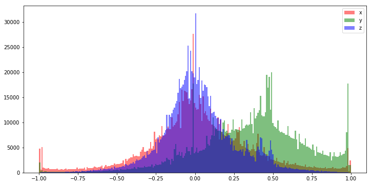
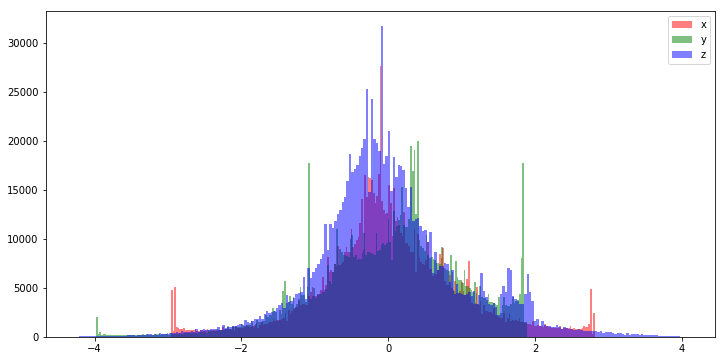

Most machine learning algorithms only perform well on data that has been properly prepaired through some process of normalization or rescaling. In practice it is almost always preferable to scale our input data between the ranges of -1.0 and 1.0, or to shift the mean of the data to zero before and standardize the variance before passing it to our model. We then both train and deploy our model using normalized input. So long as we apply the same normalization techniques to our test and production data that we did to the training data, the performance of our algorithm may greatly improve. It is often the case that we normalize each feature column seperately. This technique is called feature-wise normalization and it is implicit in the examples below.
It should also be noted that the term normalization is somewhat ambiguous) and used loosely in the literature and resources on the internet. Technically, normalization means to transform samples of data such that they have an l1 or l2 norm (think vector magnitude). Here we use normalization in the broad sense to mean data preprocessing.
For this suite of examples we will use mobile phone accelerometer data from the WIreless Sensor Data Mining (WISDM) Actitracker dataset. This data includes over 1 million examples containing x, y, and z accelerometer data sampled at 20Hz. Each sample is labeled as one of six human activities (walking, standing, stairs, etc...) making it a perfect candidate for a supervised learning task.
Below is a histogram of the raw Actitracker dataset. We can see that the distribution looks quite gaussian, especially the x and z features. The y dimension looks like it is either left skewed, or the range of the y accelerometer introduces a clipping-bias and that much of the information above 20 is lost (and potentially corruping value around 19 or 20).
This distribution actually looks so good that we might be able to get away with feeding our model the raw data. That said, it rarerly hurts to rescale the values between -1.0 and 1.0 before feeding it to our model and generally improves performance.
One of the two most common normalization techniques is a simple rescale operation that maps the values in the dataset between -1.0 and 1.0. This technique uses the minimum and maximum values from the dateset as -1.0 and 1.0 respecitvely. A dataset with values between 0.0 and 50.0 would be rescaled such that what was 0.0 is transformed to -1.0 and what was 50 is transformed to 1.0.

We prefer to normalize values between -1.0 and 1.0 because small values keep our weight parameters from exploading or vanishing gradients during training. That is a sort of just a fancy way of saying samples that have too great a magnitude can permanently "damage" our model weights during the training process, and by normalizing our data in this way we can attempt to mitigate against this problem.
# example min-max scale function
def min_max_scale(values, new_min, new_max):
values_std = (values - values.min(axis=0)) / (values.max(axis=0) - values.min(axis=0))
return X_std * (new_max - new_min) + new_min
# assumes a numpy matrix of input data X
normalized_X = min_max_scale(X, -1.0, 1.0)
Sklearn has a wonderful built in class that provides this functionality to the min/max of unseen data based on training data.
# same thing with sklearn
import sklearn
# use preprocessing.RobustScaler() if you have lots of outliers in your data
min_max_scaler = preprocessing.MinMaxScaler()
normalized_X = min_max_scaler.fit_transform(X)
If your data is non-gaussian it is often very helpful to preprocess it in such a way that it becomes gaussian, with a mean of zero and a variance of 1.0. This is done by subtracting the mean of the distribution from each sample, and scaling the values so that they have a unit variance.

This process is trivial using the sklearn preprocessing module.
from sklearn import preprocessing
# assumes a numpy matrix of input data X
# use preprocessing.robust_scale() instead if you have lots of outliers in your data
scaled = preprocessing.scale(X)
# the mean is now 0
print(scaled.mean(axis=0))
# and the std deviation and variance are now both 1
print(scaled.std(axis=0))
For further information about data preprocessing at large, the scikit-learn website has a fantastic tutorial page on the subject that expounds on much of this information.